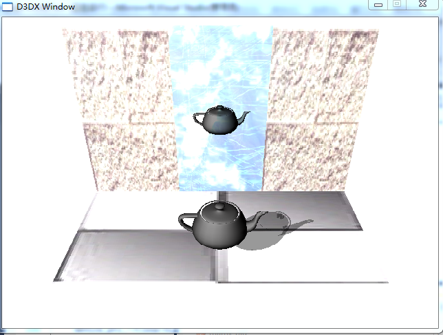
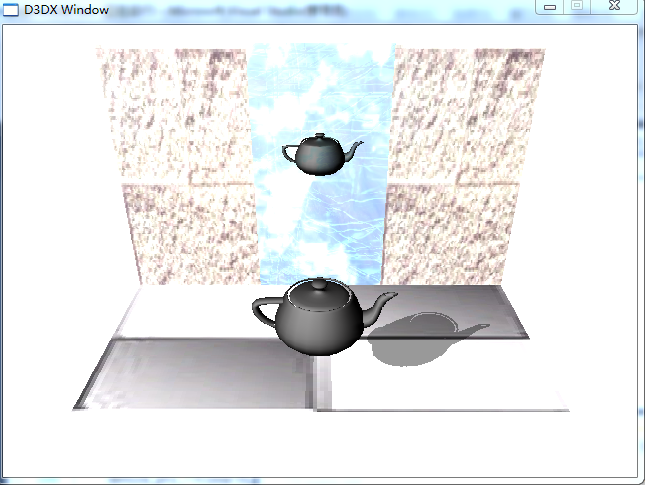

|
模板緩存
模板緩存
鏡面效果
陰影效果
example
模板緩存
模板緩存 是一種 離屏緩存 其分辨率 與後台緩存 深度緩存 完全相同
模板緩存中的 像素 與 後台緩存 深度緩存 一一對應
模板緩存 允許 動態 有針對性 的將某個 像素寫入後台緩存
(如製作 鏡面特效時 將 鏡中倒影 限制在鏡子內)
使用
HRESULT SetRenderState(
[in] D3DRENDERSTATETYPE State, //D3DRS_STENCILENABLE
[in] DWORD Value //TRUE(打開) FALSE
);
打開/關閉 模板緩存
在Clear中 傳入 D3DCLEAR_STENCIL 將模板緩存 指定為 指定值
device_ptr_->Clear(0,0,D3DCLEAR_TARGET | D3DCLEAR_ZBUFFER | D3DCLEAR_STENCIL,0xffffffff,1.0f
,0); //模板緩存值
在設置深度緩存時 也包含了 模板緩存的設置 (他們共享 同一個離屏緩存)
模板測試
模板測試 使用一個
LHS (左值)
RHS (右值)
進行比較
LHS 為 定義的模板參考值 & mask_l
RHS 為 測試的模板值 & mask_r
mask_* 為一個32位 的掩碼值
使用
HRESULT IDirect3DDevice9::SetRenderState(
[in] D3DRENDERSTATETYPE State, D3DRS_STENCILMASK(左) D3DRS_STENCILWRITEMASK(右)
[in] DWORD Value
);
設置掩碼值
使用
HRESULT IDirect3DDevice9::IDirect3DDevice9::SetRenderState(
[in] D3DRENDERSTATETYPE State, D3DRS_STENCILZFAIL(深度測試失敗時) D3DRS_STENCILFAIL(模板測試失敗時) D3DRS_STENCILPASS(模板測試成功時)
[in] DWORD Value
);
設置 測試 成功/失敗 後 如何替換
value 取值
D3DSTENCILOP_KEEP //保持原值不變
D3DSTENCILOP_REPLACE //替換為模板參考值
使用
HRESULT IDirect3DDevice9::IDirect3DDevice9::SetRenderState(
[in] D3DRENDERSTATETYPE State, //D3DRS_STENCILREF
[in] DWORD Value //DWORD 值
);
設置 模板參考值
使用
HRESULT IDirect3DDevice9::IDirect3DDevice9::SetRenderState(
[in] D3DRENDERSTATETYPE State, //D3DRS_STENCILFUNC
[in] DWORD Value //enum D3DCMPFUNC
);
設置 模板參數函數
鏡面效果
STEP 1
鏡子中 的 圖像 只不過是 真實圖像的一個 倒影
所以 要實現鏡面效果 首先是 計算出 倒影的 位置
使用
D3DXMATRIX * D3DXMatrixReflect(
__inout D3DXMATRIX *pOut,
__in const D3DXPLANE *pPlane
);
返回 一個 倒影變換矩陣
使用 原變換矩陣 * 倒影變換矩陣 = 變換矩陣
(變換矩陣 為 原變換矩陣 的倒影)
STEP 2
繪製倒影時 倒影的點順序 和原模型 方向相反 這會導致 正面被誤認為背面
故此時還需要 修改 消影方式
HRESULT SetRenderState(
[in] D3DRENDERSTATETYPE State, //D3DRS_CULLMODE(設置消影 方式)
[in] DWORD Value
);
value 取值
D3DCULL_NONE //完全禁用 消影
D3DCULL_CW //只對順時針繞序的三角形單位 消影
D3DCULL_CCW //(默認值) 只對逆時針繞序的三角形單位 消影
STEP 3
此時 倒影處於 鏡子之後 故會被 鏡子擋住而不進行渲染
故需要 禁用深度緩存 使倒影得到渲染
device_ptr_->SetRenderState(D3DRS_ZENABLE,FALSE);
繪製後 需要恢復深度緩存
device_ptr_->SetRenderState(D3DRS_ZENABLE,TRUE);
STEP 4
此時 倒影的 成像 和 鏡子的 成像 位於同一位置 還需要設置 融合效果
使倒影的位置 只有 倒影的像素
device_ptr_->SetRenderState(D3DRS_ALPHABLENDENABLE, TRUE);
device_ptr_->SetRenderState(D3DRS_SRCBLEND, D3DBLEND_DESTCOLOR);
device_ptr_->SetRenderState(D3DRS_DESTBLEND, D3DBLEND_ZERO);
模板 限制 鏡面區域
STEP 1
首先將模板緩存清除 0
STEP 2
將模板測試設置為始終成功 且若成功將 模板緩存對於位置設置為1
將鏡面繪製到 模板緩存
(既將鏡面 標記到模板緩存)
STEP 3
將模板測試設置為 模板值為1 成功(繪製區域被限制到了 鏡面)
將倒影 繪製到模板
注意
在繪製 鏡面效果之前 還需要 計算 是否需要繪製鏡面(既倒影是否在 鏡面區域內)
或使用模板 將繪製區域限制在鏡面內
陰影效果
由於光直線傳播 而形成了物體 陰影
繪製陰影 可以 極大的 在加強真實感
STEP 1
使用
D3DXMATRIX * D3DXMatrixShadow(
__inout D3DXMATRIX *pOut, //傳入 物體變換矩陣
__in const D3DXVECTOR4 *pLight, //光描述 一個4D向量 前三個值為 光方向向量的相反方向 (最後一個值定義光源類型 0方向光 1點光源)
__in const D3DXPLANE *pPlane //陰影所在平面
);
計算 陰影變化矩陣 S
新的變化矩陣N 為原矩陣O * S
N = O * S
STEP 2
將 材質設置為 黑色 0.5的透明度
繪製陰影
模板緩存
模板緩存 代碼 幾乎和 鏡面效果時一樣
首先將繪製區域限制在 陰影面
之後需要修改 在繪製像素到 後台緩存時 模板測試成功 就將模板值加1
因為將立體圖形 壓為扁平圖時 可能有多個 點 被映射到同一位置
此位置 若指定了 一定的透明融合 此點將被多次融合 從而將顯得 更暗
(使模板+1 下次對此位置的模板測試 就會失敗 而後保證 所有陰影位置 只繪製一次)
//下圖為 多次融合 導致 茶壺頂/嘴 比周圍暗

//下圖為 防止多次融合的 陰影

注意
此繪製陰影的方法 並不高效 如果有大量陰影需要繪製
應該使用 陰影體(shadow volume)
example
code\模板緩存 下為一個完整的示例 顯示了如何繪製一個茶壺的 鏡面倒影 和到某一平面的陰影
|